Cinco etapas cerradas visualmente. Identificador de inventario: C30.
1. Planta y calle — Las siete huellas registradas y los patios se conservan. Se contrasta el borde completo con la referencia aérea y se comprueba la ausencia de invasiones de calzada.
2. Banquetas y esquinas — Se revisan los encuentros visibles de Serdán, Garmendia, Yáñez y Obregón. Se conserva el suelo anterior; no se añaden banquetas ni rebajes donde no existe respaldo visual.
3. Edificios y volúmenes — Siete edificios revisados. Se diferencian el cuerpo de dos niveles de Obregón, los cuerpos bajos de Garmendia y la estructura abierta de Serdán; alturas estimadas, sin medición de campo.
4. Fachadas y acabados — Se sustituyen los arcos genéricos uniformes por tres frentes de Obregón. Se añaden los rasgos visibles del banco, estructura abierta, cortina y ventanas de Garmendia; laterales ocultos permanecen neutros.
5. Equipamiento y cierre — Acceso escalonado y barandal visibles del banco, conservación del paseo y patios. Comprobación de geometría, rutas de navegación y carga ligera; sin inventar mobiliario en zonas ocultas.
Antes y después de la tanda
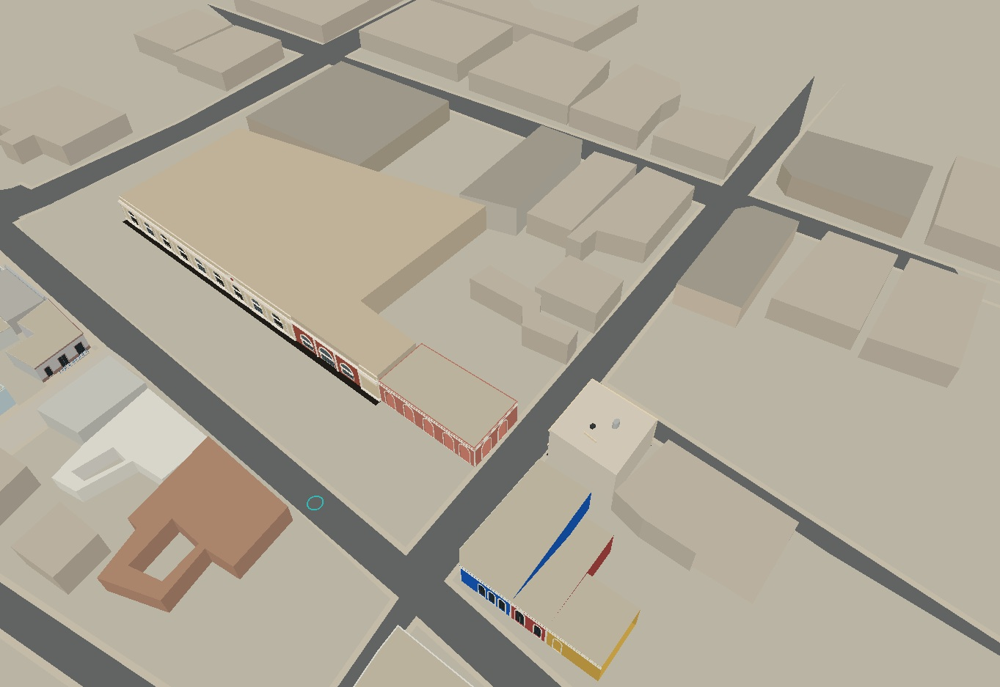
Antes · cuadra
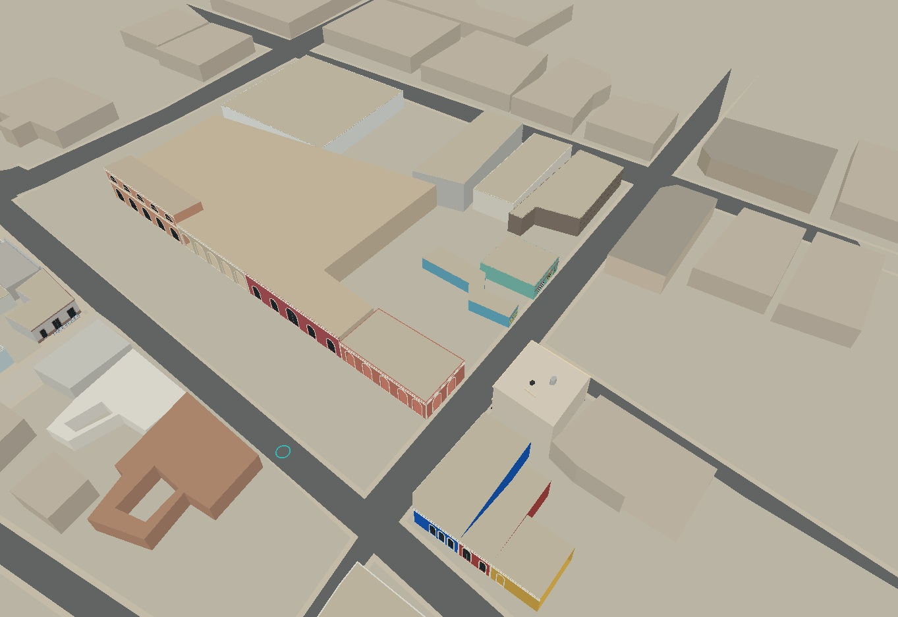
Despues · cuadra
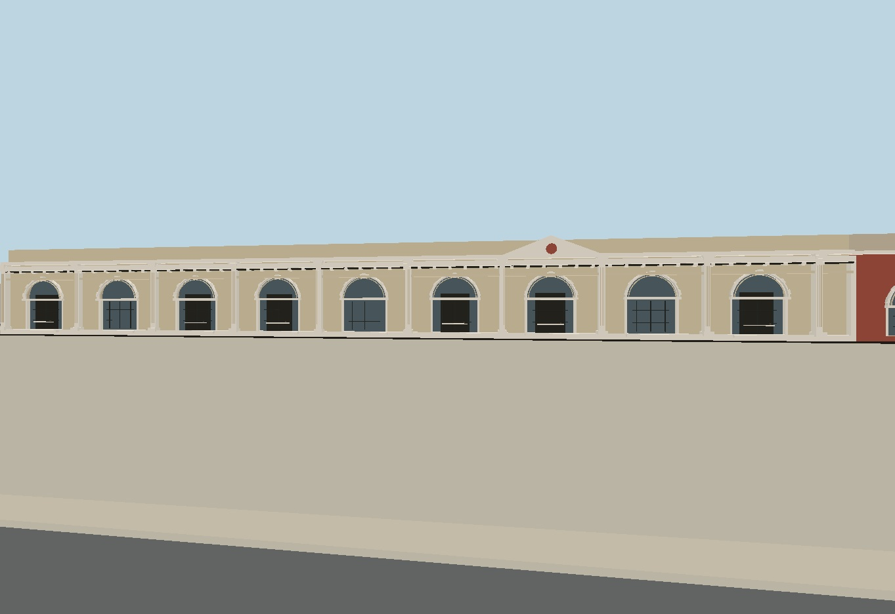
Antes · obregon
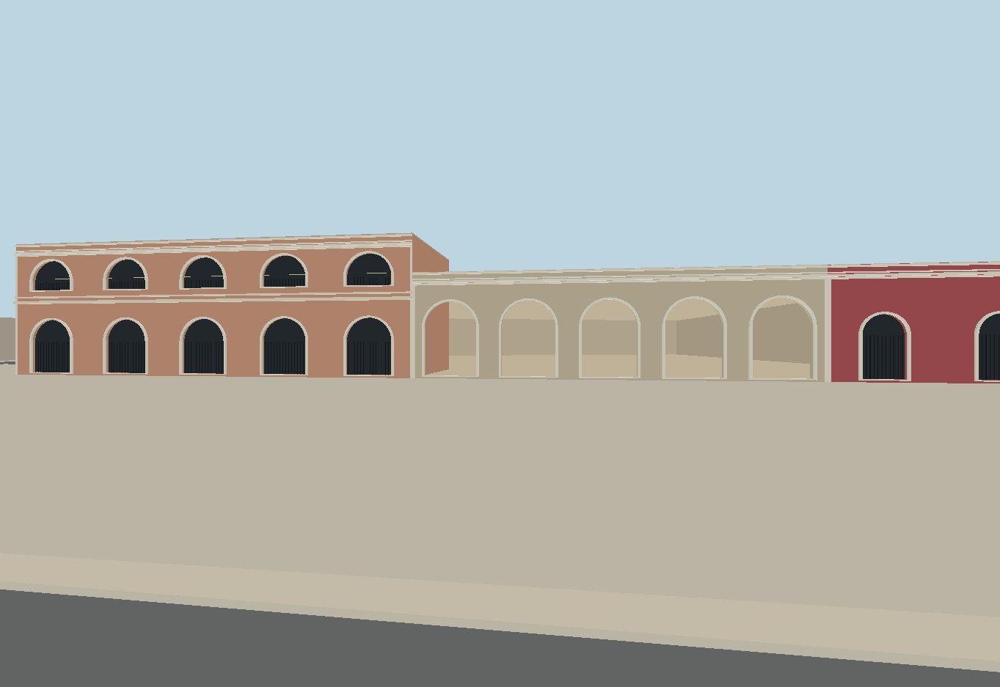
Despues · obregon
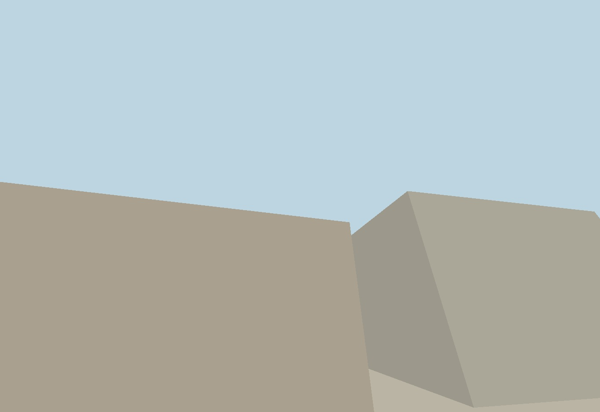
Antes · serdan
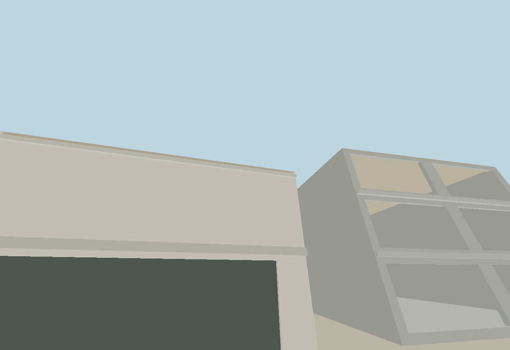
Despues · serdan
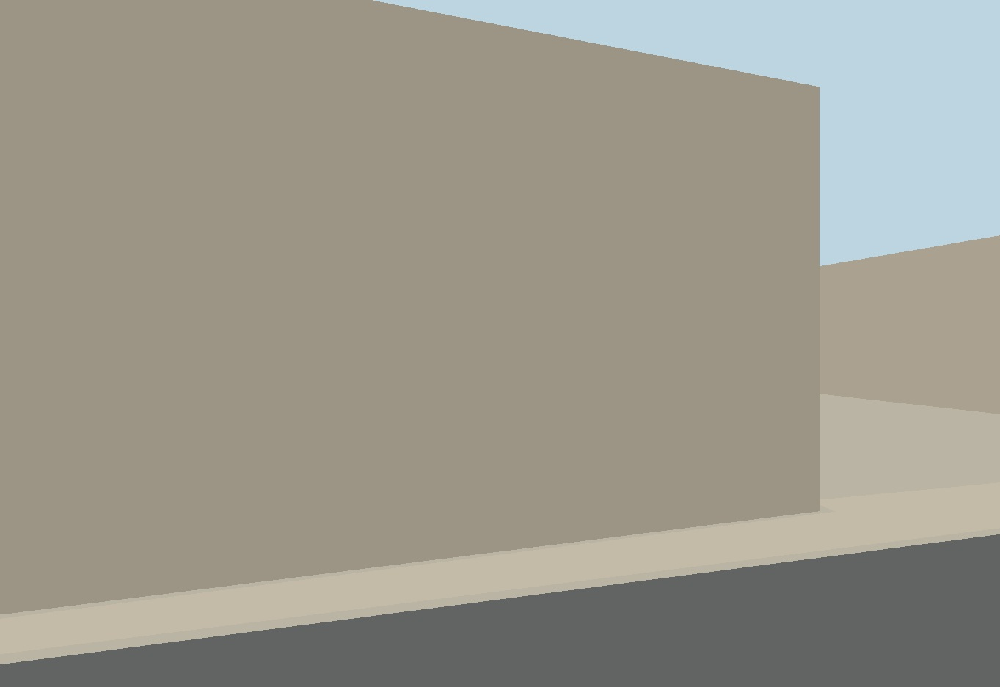
Antes · garmendia
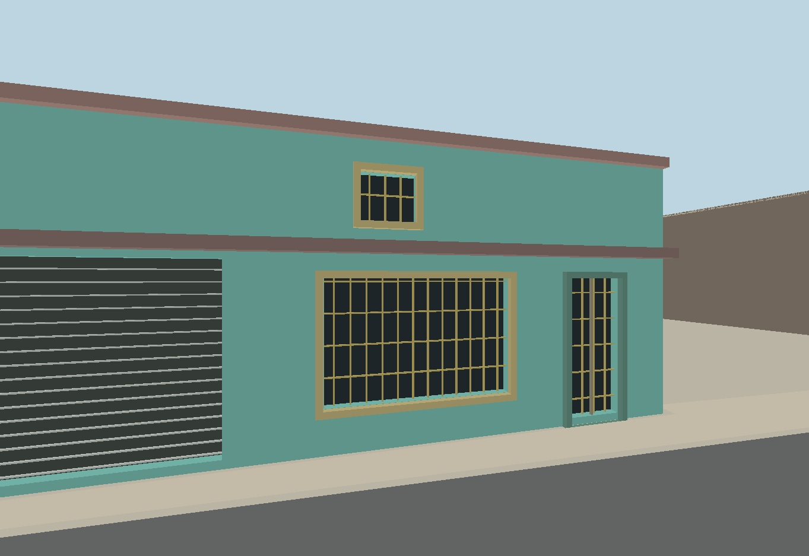
Despues · garmendia
Cámaras idénticas entre modelo anterior y posterior. La comparación con las fotografías es visual y aproximada; las imágenes no son un levantamiento métrico.
Referencias conservadas
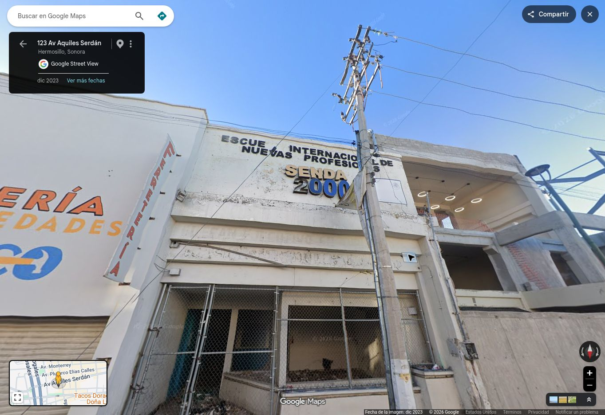
serdan-centro · dic 2023
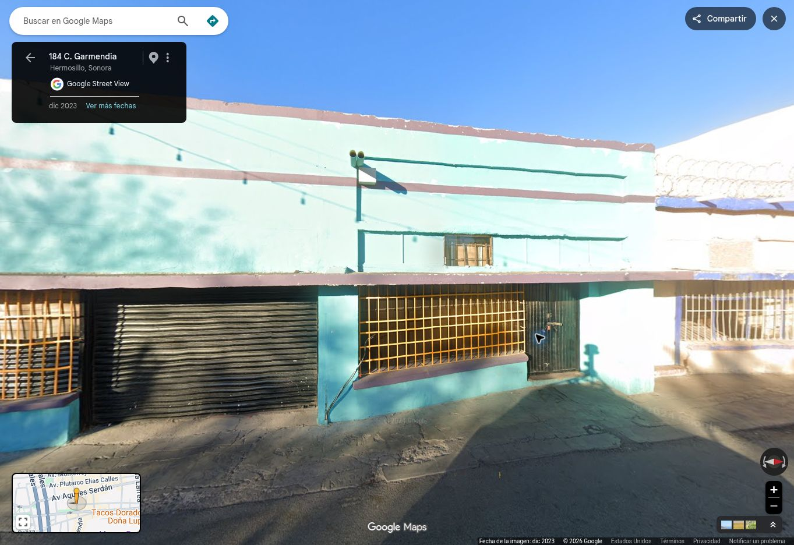
garmendia-medio · dic 2023
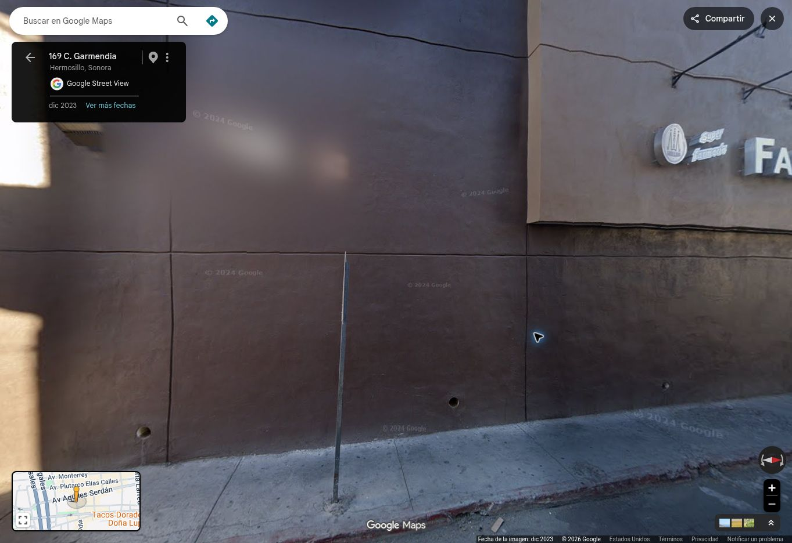
garmendia-norte · dic 2023
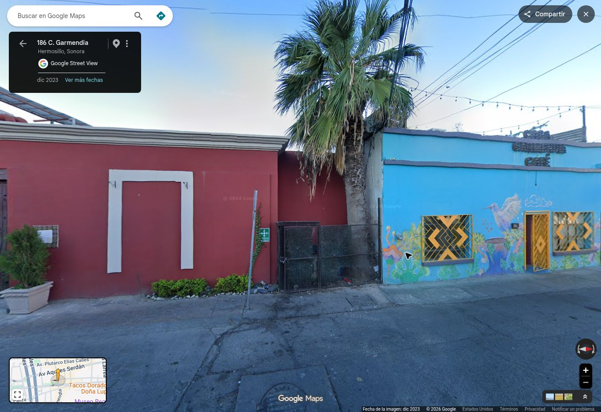
garmendia-sur · dic 2023
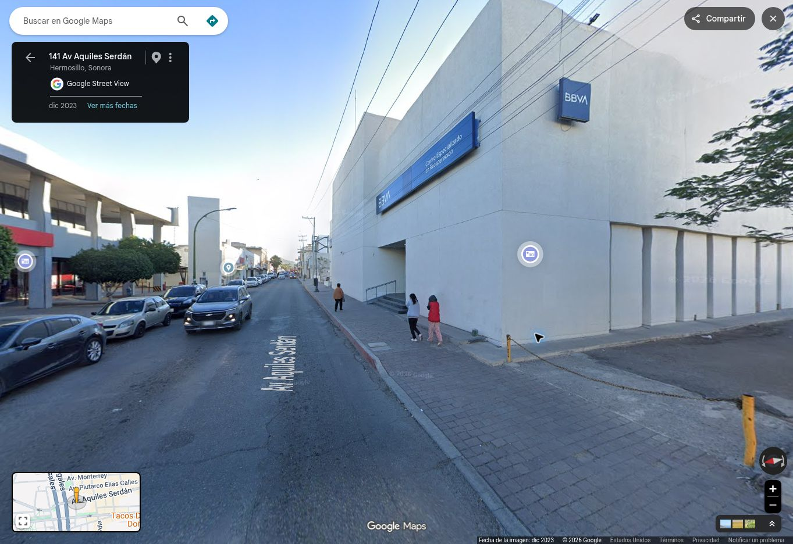
yanez-banco · dic 2023
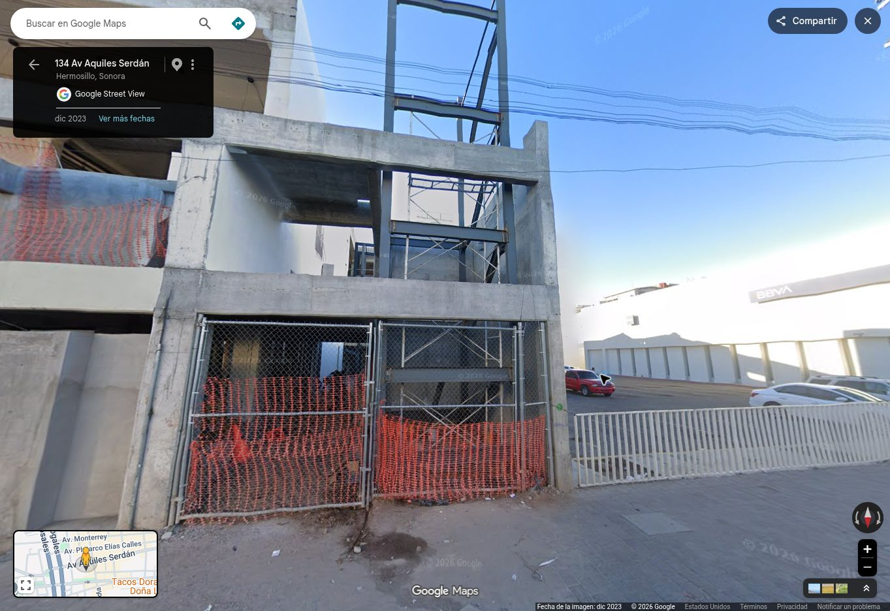
serdan-biblioteca · dic 2023
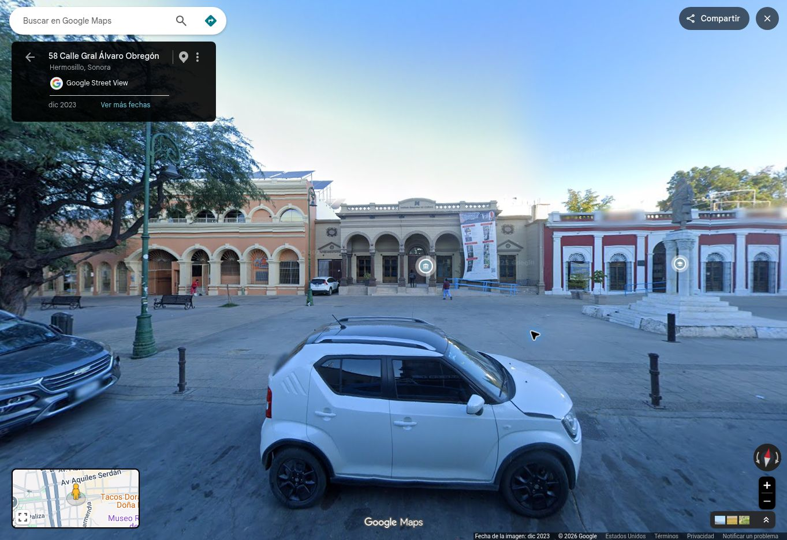
obregon-isc · dic 2023
Límites del cierre
Cierre visual aproximado, no levantamiento topográfico ni restitución métrica.
Street View: diciembre de 2023; no acredita cambios posteriores.
Cotas y ejes de vanos se interpretan visualmente. Cámaras de contraste aproximadas, no calibración fotogramétrica.
Fachadas ocultas, interiores, anuncios, instalaciones y detalles ornamentales finos no se restituyen.
Los nombres heredados del inventario no certifican ocupante, propiedad ni uso actual.